DS5Dongle by Ohad הוא דונגל המבוסס Raspberry Pi Pico 2 W שמחבר שלט DualSense למחשב דרך Bluetooth, ומציג מצב, הגדרות ובדיקות על מסך OLED של Waveshare Pico-OLED-1.3.
הגרסה הזו מוגדרת כגרסת Stable ראשונה של ענף 1.0.x: שם קובץ ה-UF2 הוא DS5Dongle-by-Ohad-1.0.4.uf2.
1. מחברים את Pico 2 W למחשב בעזרת USB.
2. מעדכנים Firmware על ידי גרירת קובץ ה-UF2 לכונן ה-BOOTSEL של הפיקו.
3. מחכים שהדונגל יעלה ויציג מסך פתיחה ואז מסך Status.
4. מחברים/מצמדים את השלט דרך Bluetooth.
5. משתמשים ב-KEY0 ו-KEY1 שעל מסך ה-OLED כדי לעבור בין מסכים.
מסך פתיחה קצר שמציג את שם המוצר והגרסה.
מציג גרסת Firmware, מצב חיבור Bluetooth, כתובת השלט, אחוז סוללה, חיווי טעינה, סטיקים, טריגרים, D-Pad וכפתורי פנים.
ניהול עד 4 סלוטים לשלטים. השורה עם * היא הסלוט הפעיל. סלוט ריק מסומן (empty).
שליטה במצב פס התאורה: מצב HOST שבו המשחק/המחשב שולטים בצבע, או מצב BATT שבו הדונגל מציג צבע לפי סוללה.
בדיקת טריגרים אדפטיביים L2/R2 ומצבי משוב.
תצוגת ערכי ג'יירו/טילט ובדיקת תנועה.
בדיקת משטח המגע ומספר אצבעות מזוהות.
נתוני דיבוג: זמן עבודה, קצב USB audio, קצב Bluetooth, שגיאות HCI ומצב BT.
עוצמת אות Bluetooth ב-dBm וחיווי איכות אות.
מדי שמע לדיבורית/רמקול: Spk ו-Hap.
מסך הגדרות. ניווט עם D-Pad, שינוי עם שמאלה/ימינה, שמירה עם Triangle.
תפריט מיפוי כפתורים. מאפשר להעביר כפתור פיזי לכפתור אחר, לכבות כפתור, או להגדיר כפתור כ-PicoMic.
1. נכנסים למסך Remap.
2. בוחרים שורה עם D-Pad למעלה/למטה.
3. משנים יעד עם D-Pad שמאלה/ימינה.
4. שומרים עם Triangle.
5. השורה `Remap on/off` קובעת אם הטבלה פעילה. כשהיא off, המיפוי לא מוחל על הדיווח למחשב.
יעדים אפשריים: L2, L1, Share, Up, Left, Down, Right, L3, R2, R1, Opt, Tri, Cir, Cross, Sq, R3, PS, Pad, Mute, Off, PicoMic.
ברירת המחדל: רוב הכפתורים עוברים כרגיל. הכפתור Mute מוגדר כ-PicoMic כדי לשלוט מקומית במיקרופון BT של הדונגל.
PowerCombo ו-Idle משתמשים במסלול כיבוי בטוח: הדונגל חוזר למסך Status, מציג Powering Off..., שומר שינויים ממתינים ואז מנתק את השלט.
כאשר AudioKeep פעיל, ה-Idle לא יכבה את השלט בזמן שהמחשב מזרים אודיו דרך הדונגל. זה שימושי לשמיעת מוזיקה או שימוש באוזניות דרך השלט בלי ללחוץ על כפתורים.
1. לוחצים על BOOTSEL בפיקו ומחברים USB.
2. נפתח כונן בשם RPI-RP2.
3. גוררים אליו את `DS5Dongle-by-Ohad-1.0.4.uf2`.
4. הפיקו מבצע reboot ומעלה את הגרסה החדשה.
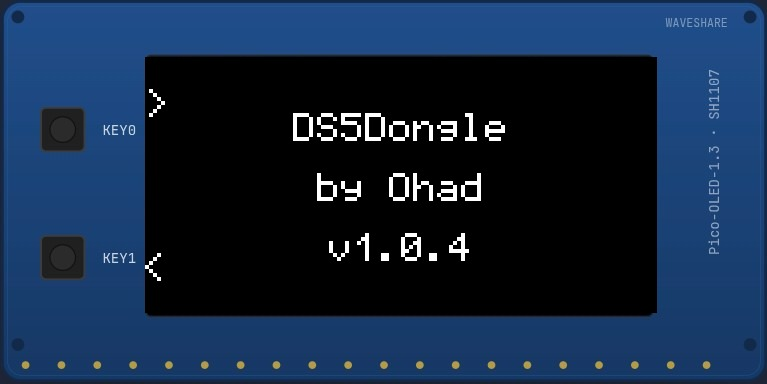
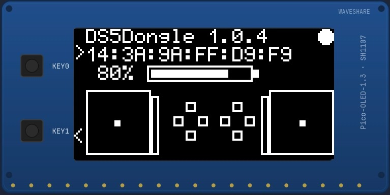
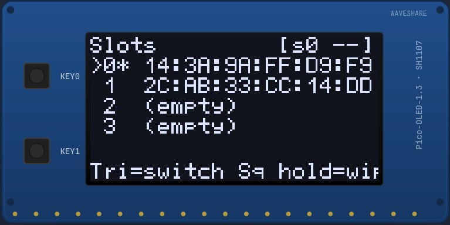
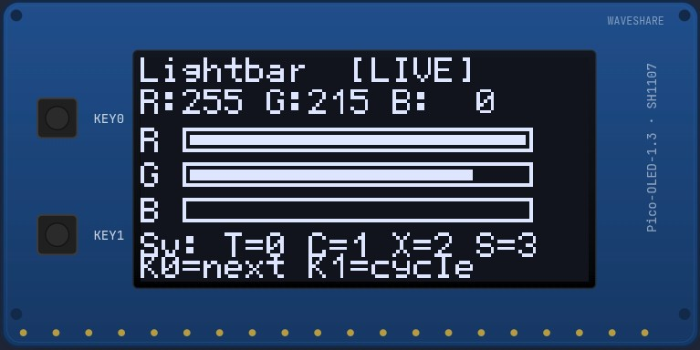
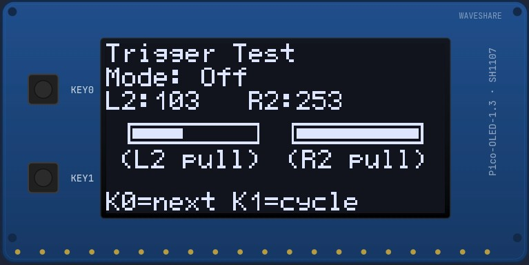
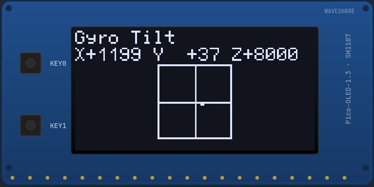
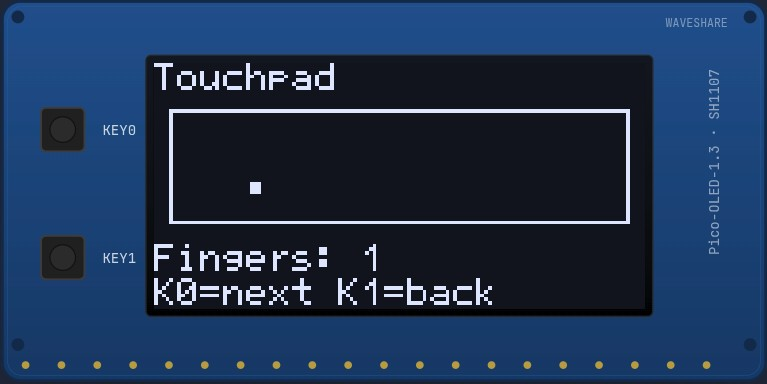
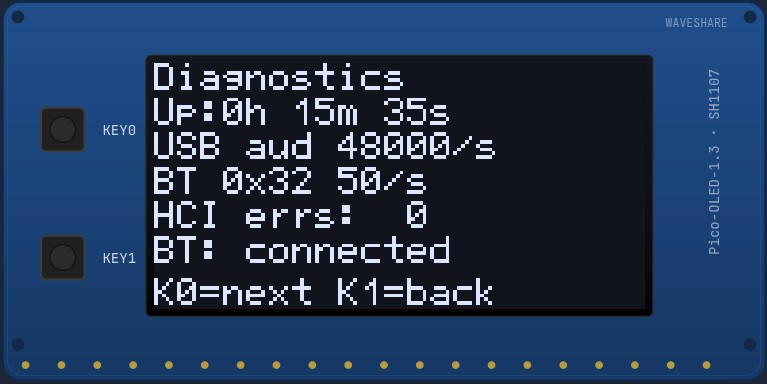
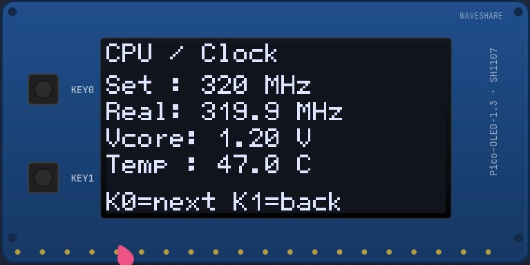
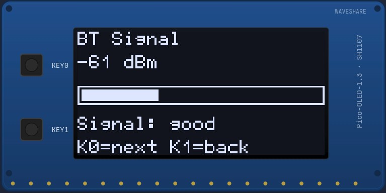
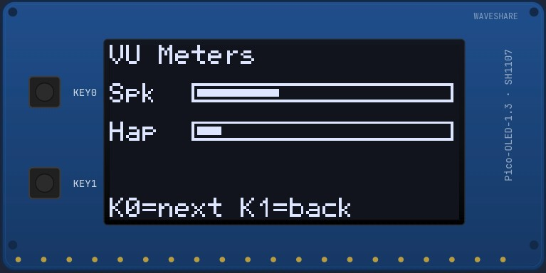
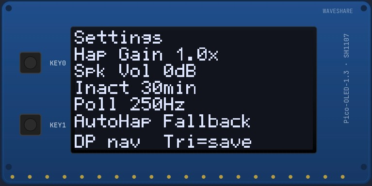
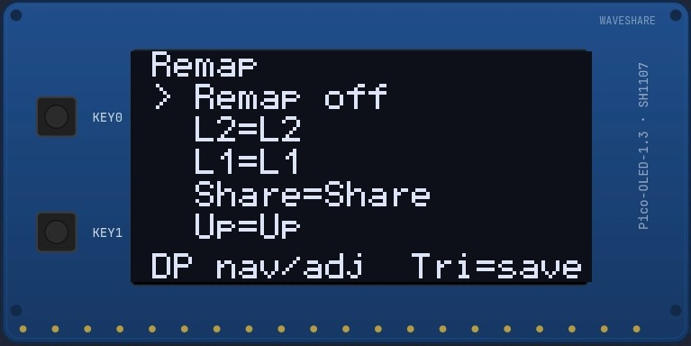